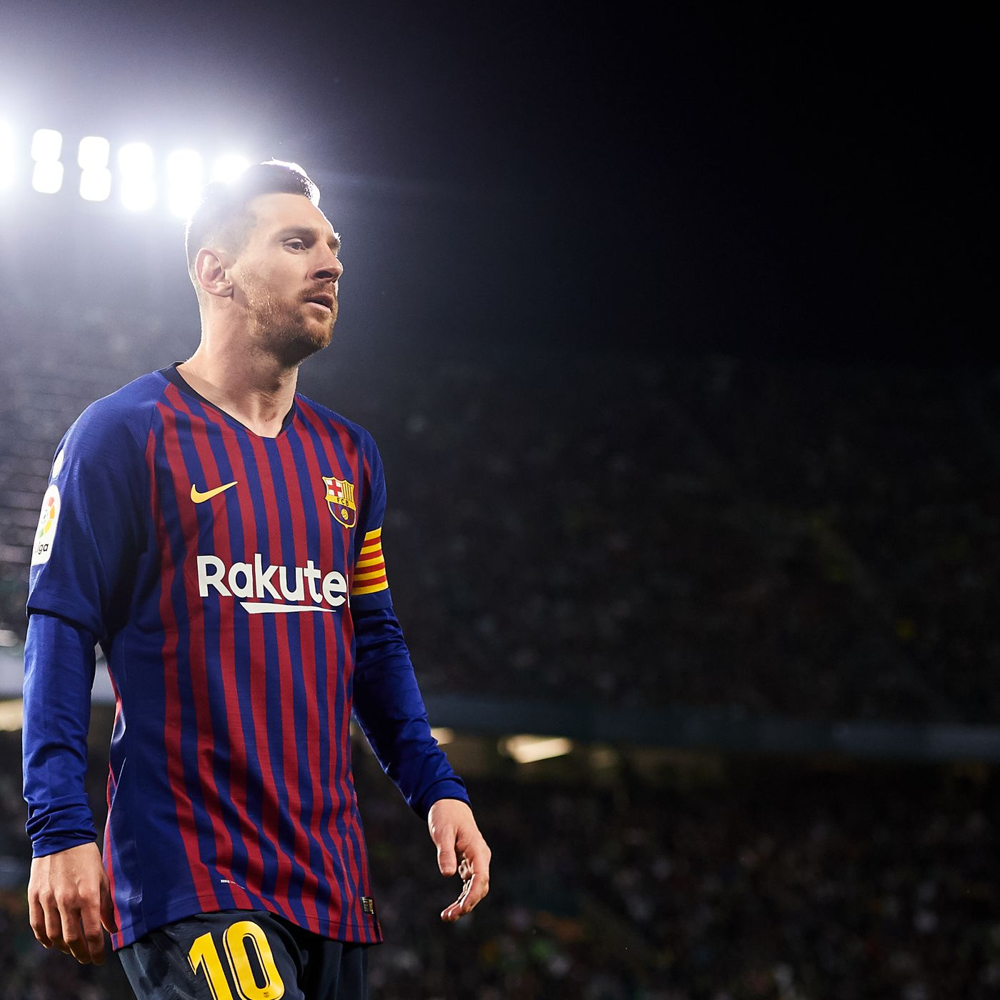
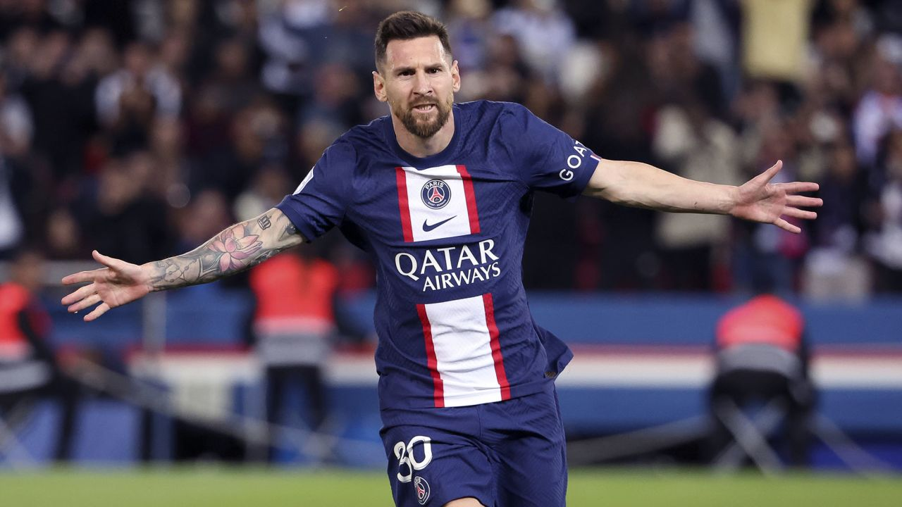

Seleccion Argentina
En el año 2005 Leo Messi debutaba con su seleccion Argentina. El 10 soñaba desde chico triunfar
con ella pero en el trayecto hubieron muchas piedras en el camino llenas de dolor y derrota,
pero Messi jamas se rindio y fiel a su estilo consiguio ganar todo lo que deseaba con el Mundial
2022 como su broche de oro.
Barcelona

En el año 2004 Leo Messi debutaba con el Barcelona de España en un partido amistoso luego el
resto es historia. Messi desde sus primeros años consiguio arrasar con toda competicion que se
le ponia en frente hasta el final de su etapa Cule. Se consolido como el mejor jugador del mundo
y gano todo tipo de premio colectivo e individual.
PSG

En su etapa final de su carrera Leo Messi debutaba con el PSG en el año 2021. Formaria equipo con
la nueva estrella del momento Mbappe que con su juventud buscaria la gloria junto al viejo rey
invicto. Leo busca cumplir el sueño del PSG de conseguir su primera UCL. Sin dudas creemos que
lo lograra, porque es el mas ganador.